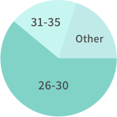
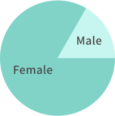

57%
Use public buses regularly or semi-regularly
72%
Want to know their bus’s ETA
88%
Open to trying a mobile transit app
83%
Have used a mobile transit apps before

BusTrack is a small scale mobile concept that I completed as part of a student project. I made many mistakes, but it was a valuable learning experience that shaped how I approached future UX projects.
Due to expansion, numerous bus routes have been recently added to the same bus stop at Washington Ave & State St in Chicago. Riders want to know the next arriving bus and how much time they have to get to the bus stop. Simply rushing to the stop when they see a bus coming no longer works because it might not be the bus the rider is expecting.
BusTrack is an iOS mobile app that uses real-time data to display incoming buses and arrival times in one place.
I started my research with a survey to better understand the needs of bus riders. Specifically, I looked at what information they find most useful when planning a bus journey and their experience using mobile apps.
Looking back, there was ample room for improvement. Some of my questions were leading. For example, I probed for features, instead of asking users about their pain points. Additionally, I could have used more binary answers. I realized that more concrete and specific answer formats made it easier for users to respond. It also made it easier for me to measure the data as a researcher.
57%
Use public buses regularly or semi-regularly
72%
Want to know their bus’s ETA
88%
Open to trying a mobile transit app
83%
Have used a mobile transit apps before
Knowing the route
Reliability
Accuracy
Alerts & delays
Age
Gender
*Percentages based on 21 participants
One trend that became clear from the survey responses was that users turned to different apps to meet their transit needs. For example, they frequently relied on Google Maps for driving trips and transit-focused apps for their public transportation needs. With that in mind, I looked at some of the leading transit apps on the market: Google Maps and Moovit. Breaking down their strengths and weaknesses helped me figure out the best features to include in this app.
Participants noted accuracy and reliability as some of their main concerns when accessing transit data, thus I emphasized features that help users track their bus. Knowing exactly what time the bus arrives gives the user more flexibility to plan their trip.
Strategic design decisions:

Next, I developed a three screen paper prototype focusing on one user scenario:
“Riders want to know the next arriving bus at Washington & State bus stop and how much time they have to get to the bus stop.”
I tested the prototype with three potential users making sure that they were able to identify which bus lines were arriving at the Washington & State bus stop and how long they had to arrive before the bus leaves.
Screen 1
This screen allows the user to find the closest bus stop serving their destination. From my user research, I learned that the majority of respondents were already familiar with existing navigation apps. So, I decided to use a similar layout as some of the competitors to reduce the cognitive load. The map communicates the user’s location and a stacked list displays the nearby bus stops and their distance.
Screen 2
This screen shows the user a list of upcoming bus lines serving Washington and State, as well as when they arrive. It also gives the user a visual indicator of how to get to the bus stop from their current location. According to the research, users wanted to know the buses ETA, so I prioritized this information in a listview to maximize space.
Screen 3
This screen allows users to view directions based on their selected bus line. Users expressed an interest in seeing their route prior to their journey, so I prioritized this information on its own screen. It swipes up and down revealing a map behind it.
The overall layout of the three screens was intuitive to users, but a few had trouble navigating between them. For example, they weren’t sure where to tap on the bus list to view their route. They also had trouble distinguishing the information between listviews on the first and second screens, since the layouts were similar.
While the user tasks were helpful in guiding my usability testing, I should have included more follow up questions. In other projects, I found this to be useful to understand their thought process and uncover other pain points not previously tested.
As I worked through iterations, I tried to use color more strategically to call attention to important information. I ended up using a primary color palette to ensure visibility between UI elements in all environmental conditions since users will likely view this app on the go. When it came time to choose a typeface, I followed the Human Interface Guidelines and choose SF Pro Display for its legibility.
In the final stages, the client provided sample route data that included information I hadn’t accounted for in earlier iterations: the bus frequency, direction (northbound, westbound, etc.) and disruptions to normal service. With that in mind, I reworked the information hierarchy to accommodate the updated information. While I didn’t have time to test those decisions with users, I presented my work for review to a senior designer who pointed out some key problems outlined below.